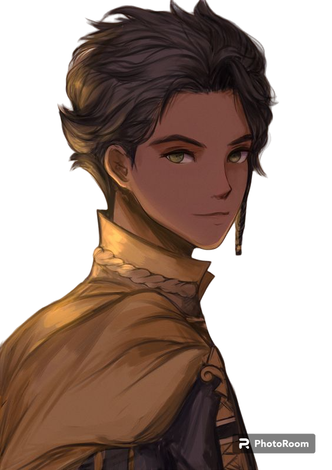
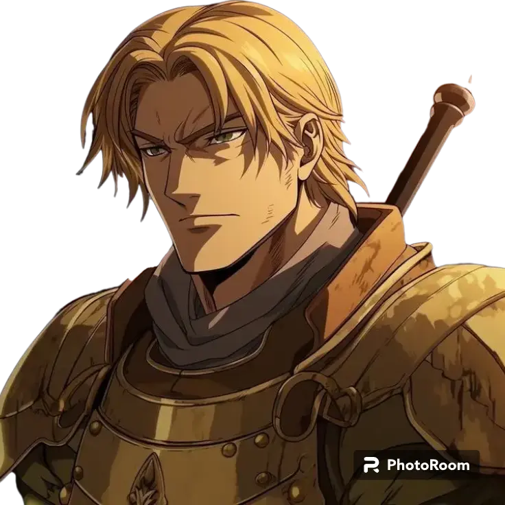
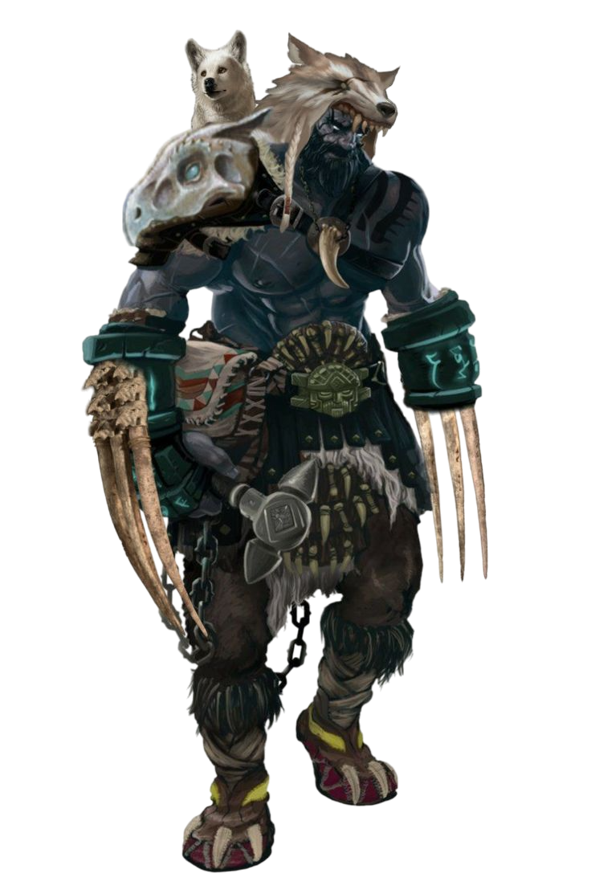
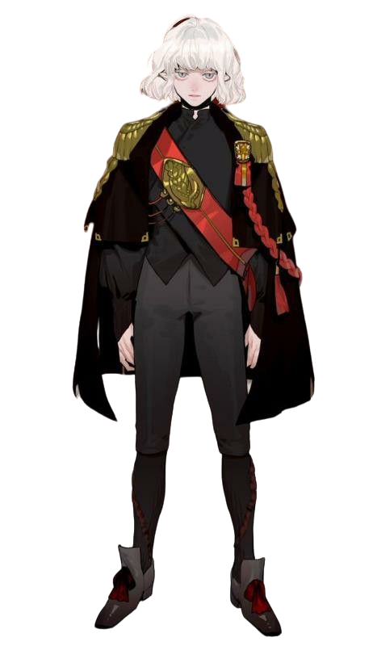

Lampiões da Luz
Os viajantes da luz em uma jornada contra a escuridão do mundo
Em meio à Guerra Rubra muitos foram deixados para trás, mortos são jogados à pilhas em fogueiras e rios. Vocês porém são a luz que persiste iluminando até os mais perversos com sua luz, garantindo que a escuridão não prevaleça ante a bondade dos Deuses.
Alíris, O Prateado
Acólito da Deusa Lua, o cuidador e curandeiro da Luz Prateada.

Objetivos: Iluminar a vida e as Terras Sagradas levando a bondade de Morwyn a todos aqueles que precisam de cura em suas almas feridas.
Aric, O Iluminado
Um estudioso sedento por conhecimento, vindo de um passado misterioso com grandes descobertas em seu caminho. Ele busca honrar ao seu mentor e seguir iluminando o mundo, assim como a Grande Academia de Korala ensina.
Objetivos: Descobrir novos segredos do mundo e compartilhar seu conhecimento para o avanço da sociedade e o bem-estar de todos.
Arkan, O Exilado
Um importante soldado e religioso do extinto Reino Dourado do Sol, agora exilado de suas antigas tropas após virar as costas para o corrupto Reino Rubro. Encontrou refúgio e aliados entre os Lampiões da Luz.
Objetivos: Buscar redenção e justiça, protegendo os indefesos e lutando contra a tirania que ele um dia serviu.
Ivernn, O Renascido
Abençoado pela Grande Mãe Terra, Rontra, Ivernn enfrentou um passado marcado por crimes terríveis. Após ser absolvido, recebeu uma segunda chance para viver entre os vivos novamente.
Objetivos: Proteger a natureza e seus seguidores, buscando reconciliar seu passado sombrio com um presente dedicado ao serviço e à redenção.
Vasha, O Lunar
Antigamente um vampiro, uma criatura de trevas e sombras, encontrou nas bençãos da Deusa Lua uma alma para chamar de sua. Agora ele segue a doutrina lunar, espalhando a bondade de Morwyn para todos que cruzam seu caminho.
Objetivos: Um dia acabar com aqueles que compartilham seu sangue, especialmente seu pai, um dos vampiros da cidade de Hidela. Além disso, Vasha vive com curiosidade, descobrindo um novo mundo cheio de luz e esperança, algo que antes ele nunca teve.